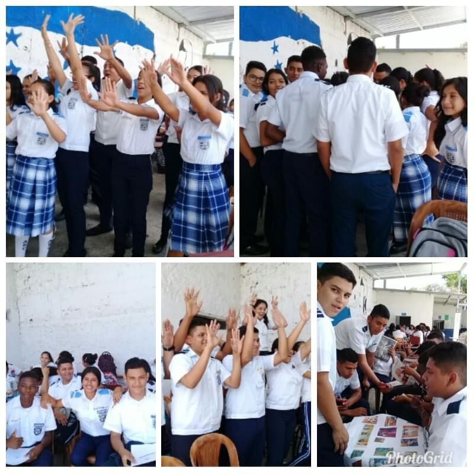

historia
Para construir las edificaciones del Instituto, con un subsidio conseguido por el Dr. Alfonso Hernández Córdova por parte del congreso nacional, más el dinero de la matrícula del año 2000, comenzamos la construcción de las primeras cuatro aulas de la institución.
En año 2000 se amplía la atención de servicios profesionales y se da inicio a la jornada vespertina con dos secciones de primer curso de ciclo común.
En el 2001 se logra la creación de la primera carrera de diversificado “Bachillerato en Trámites Aduaneros” en la jornada nocturna con los ingresos por matrícula, con la ayuda de padres de familia, profesores y alumnos logramos completar la continuidad de aulas necesarias para el funcionamiento de la institución en general. Es así como nos trasladamos a nuestras aulas construidas en forma de emergencia, pues en la escuela ya no nos querían albergar.
En el año 2003 logramos graduar nuestro primer grupo de 15 jóvenes como Bachilleres en trámites aduaneros.
En el año 2005 comenzó a funcionar la jornada matutina coordinados por Lidis Marbella Torres y Timoteo Ochoa con dos secciones de ciclo común y un curso de Bachillerato Técnico en Computación con Bachillerato en Ciencias y Letras.
Hemos crecido en cuanto a la cantidad de alumnos y las jornadas educativas, pero de la misma forma han crecido las necesidades; pues carecemos de un laboratorio de computación, Ciencias Naturales, talleres de actividades prácticas, aulas, oficinas, auditorio y áreas recreativas etc.
Para el funcionamiento del Bachillerato técnico en Computación se comenzó utilizando los laboratorios del INTAE y un café net de la Colonia Buenos Aires contiguo a la colonia planeta y posteriormente se contrató una empresa privada para darles las asignaturas que se necesitaba el laboratorio de computación, la cual era subsidiada por los padres de familia.
EN el 2006 inicia en la jornada nocturna la carrera de Educación Comercial y en el presente año inició el Técnico en Computación en la jornada nocturna.
En el 2007 se construye el Laboratorio de Ciencias Naturales, coordinado y diseñado por la profesora Lidis Marbella Torres con la colaboración del Director y Sub-director, profesores de Ciencias Naturales, y demás personal docente realizando excursiones para recaudar fondos.
Además se construyó un laboratorio de computación con fondos de la administración.
Ya en este año nuestra institución cuenta con 60 docentes: 21 en la jornada matutina, 18 en la jornada vespertina y 21 de la jornada nocturna.
En el 2008 Nuestro país sufre golpe de estado, y el año lectivo termina en septiembre y se promediaron las notas de los estudiantes vía de decreto.
En el 2010 Se construyen las oficinas de administración, consejería, orientación, secretaría y dirección.
En el 2011 Se construye la oficina de Sub-Dirección y se incorporó los nuevos Bachilleratos Técnico Profesional en Informática, en Administración y en Contaduría.
Sale la última promoción del Bachillerato en Tramites de Aduana en la jornada nocturna el cual se cerró por darle apertura de los nuevos Bachilleratos Técnicos Profesionales..
En el 2012-2013 hay una baja considerable de matrícula en la jornada nocturna y vespertina debido a la inseguridad que impera en el sector por lo cual se fusionaron los cursos por desgaste, reubicando a varios profesores en otras funciones y a otros reubicándolos en la jornada matutina.
Sale la última promoción del Bachillerato técnico en Computación en la jornada matutina y vespertina.
Se celebraron los quince años de funcionamiento del Instituto
En este año ya se aprueban los BTP publicado en la Gaceta.
En el 2014 - En la jornada matutina la matrícula sigue siendo la jornada más consolidada y las otras dos jornadas cada año siguen bajando.
Aún seguimos careciendo de un buen equipamiento de los dos laboratorio de computación, equipamiento del laboratorio de Ciencias Naturales, talleres de actividades prácticas, aulas, auditorio, gimnasio, sala de profesores, sanitarios y áreas recreativas etc.
En el año 2015 se apertura el Bachillerato Técnico Profesional en Administración de Empresas en la jornada Matutina, por la baja matricula en esta modalidad en la jornada Nocturna.
En el 2016 se inicia el Bachillerato Técnico Profesional en Contaduría y Finanzas en la jornada Vespertina, no se logra matricular la modalidad de Bachillerato Técnico Profesional en Administración de Empresas en la jornada Nocturna.